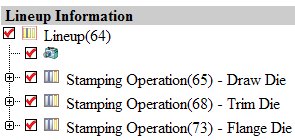
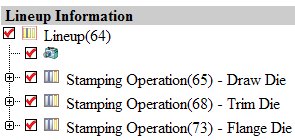

导出至浏览器
-
再次点击 DOL 报告
 。
。 -
点击 DOL 报告对话框中的导出至浏览器 。
信息将被写入到 HTML 文件中，并在单独的浏览器窗口中打开。

-
关闭浏览器窗口，然后在 DOL报告对话框中点击关闭。
-
关闭部件。
再次点击 DOL 报告  。
。
点击 DOL 报告对话框中的导出至浏览器 。
信息将被写入到 HTML 文件中，并在单独的浏览器窗口中打开。

关闭浏览器窗口，然后在 DOL报告对话框中点击关闭。
关闭部件。